Learn how to visualize percentage shares, budgets, and proportions. Master slices, borders, explode highlights, rotation angles, donut charts, and know exactly when a bar chart is better.
Agar tumhe dikhana hai ki poore monthly budget ka kitna hissa food, travel, shopping aur savings par spend hua, toh Pie Chart ek visual aur intuitive choice ho sakta hai. Isme poora circle 100% ko represent karta hai aur har individual slice kisi category ka proportional share dikhati hai.
Data visualization ki bhasha mein ise Part-to-Whole Visualization kehte hain — matlab har tukda (Part) milkar ek poora 100% (Whole) banata hai.
Circle ke total 360 degrees data ke grand total (100%) ko map karte hain. Har category ka angle uske percentage ke proportional hota hai.
Pie chart tabhi valid hota hai jab sabhi categories ka sum milkar exactly 100% banata ho. Independent non-additive metrics par pie chart nahi banta!
Pie charts tab sabse zyada effective hote hain jab categories kam hon (3 se 6) aur unke shares mein noticeable difference ho.
Ek college student ko Rs. 5,000 pocket money milti hai. Dekhte hain yeh amount kin categories mein spend hoti hai:
import matplotlib.pyplot as plt
categories = ['Food & Meals', 'Daily Travel', 'Study Materials', 'Entertainment', 'Snacks & Tea']
amounts = [2200, 1100, 800, 500, 400] # Total = 5000 INR
fig, ax = plt.subplots(figsize=(7.5, 5), dpi=150)
# Create pie chart with white borders
ax.pie(amounts, labels=categories, autopct='%1.1f%%', startangle=140,
colors=['#0284c7', '#38bdf8', '#059669', '#f59e0b', '#ec4899'],
wedgeprops={'edgecolor': 'white', 'linewidth': 1.5})
ax.set_title("Student Monthly Pocket Money Distribution (Total: Rs. 5,000)", fontsize=12, fontweight='bold', pad=14)
fig.tight_layout()
plt.show()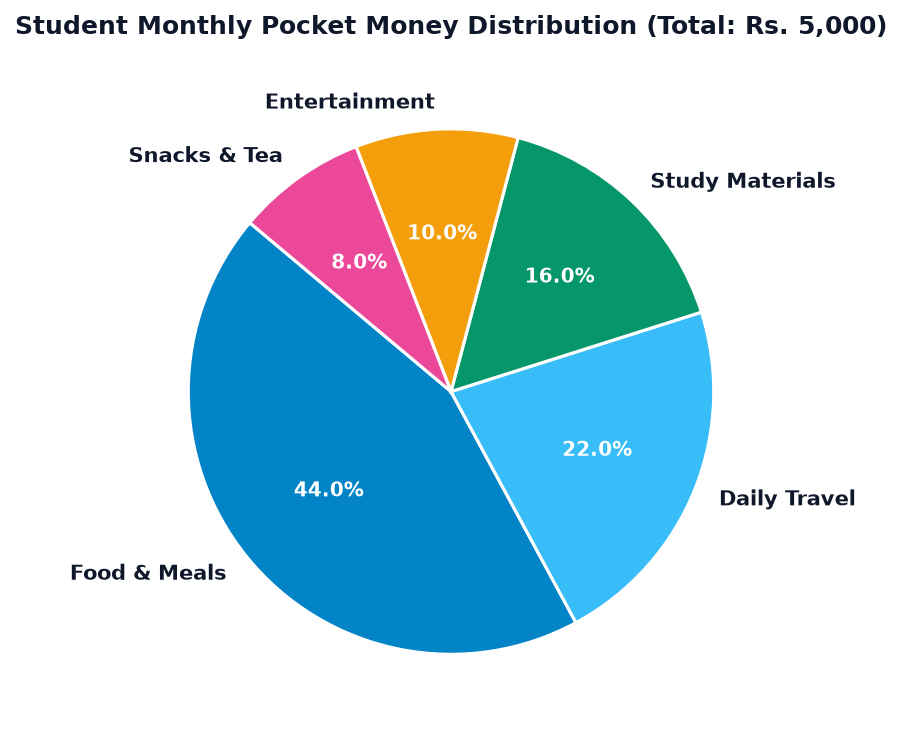
Figure 8.1: Student pocket money distribution. Food & Meals is the biggest slice (44.0%), followed by Travel (22.0%).
Ek student ke 24 ghante (100% of the day) alag-alag activities mein kaise divide hote hain:
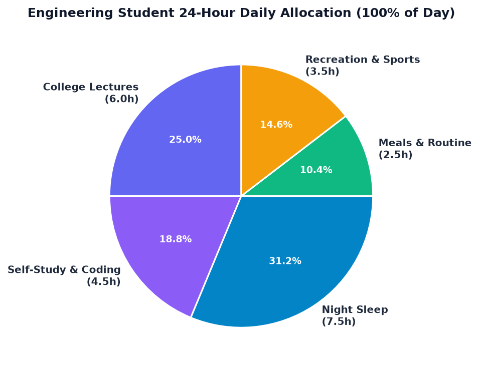
Figure 8.2: 24-hour daily routine allocation. Sleep takes 31.2% (7.5h) followed by Lectures at 25.0% (6h) and Self-Study at 18.8% (4.5h).
Matplotlib mein pie chart create karne ke do approaches hote hain: quick functional plt.pie() aur professional object-oriented ax.pie().
# Approach 1: Functional Scripting Style
plt.figure(figsize=(6, 5))
plt.pie(app_minutes, labels=app_cats, autopct='%1.0f%%')
plt.title("Quick Scripting: plt.pie()")
plt.show()
# Approach 2: Object-Oriented Architecture (Recommended)
fig, ax = plt.subplots(figsize=(6, 5))
wedges, texts, autotexts = ax.pie(
app_minutes,
labels=app_cats,
autopct='%1.1f%%',
wedgeprops={'edgecolor': 'white', 'linewidth': 1.5}
)
ax.set_title("Production Architecture: ax.pie()")
fig.tight_layout()
plt.show()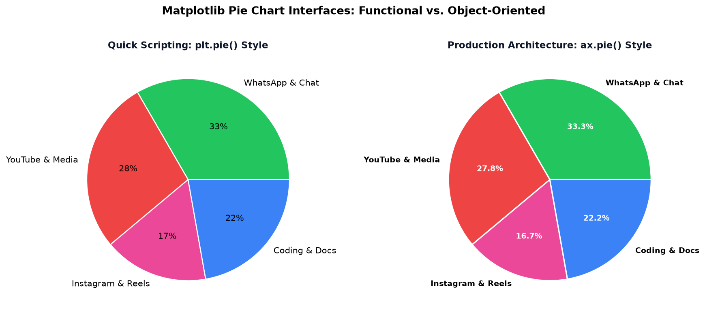
Figure 8.3: Left: Simple plt.pie() output. Right: ax.pie() object-oriented style with white slice borders and formatted text properties.
ax.pie() kya return karta hai? Yeh function 3 cheezein return karta hai:
wedges (list of matplotlib.patches.Wedge): Har individual circular slice object.texts (list of Text): Category label text objects (jo pie ke bahar likhe hote hain).autotexts (list of Text): Percentage text objects (jo slice ke andar calculate hoke aate hain). Aap inka font size, color aur weight customize kar sakte hain!Bina percentage labels ke ek pie chart adha-adhura hota hai. Slices dekh kar exact proportion guess karna human eye ke liye mushkil hota hai. autopct parameter automatically percentage calculate karke display karta hai.
| Format String | Meaning & Output | Best Use Case |
|---|---|---|
'%d%%' or '%1.0f%%' |
Rounded integer: 44%, 22% | Jab numbers bade hon aur decimal point ki zarurat na ho |
'%1.1f%%' |
1 decimal place: 44.0%, 18.8% | Industry standard for most business and student charts |
'%1.2f%%' |
2 decimal places: 48.08%, 23.85% | Scientific, banking ya financial audit dashboards |
| Custom Python function | Lambda showing percentage + raw value: 25% (6h) | Jab aapko percentage aur actual hours/rupees dono sath dikhane hon |
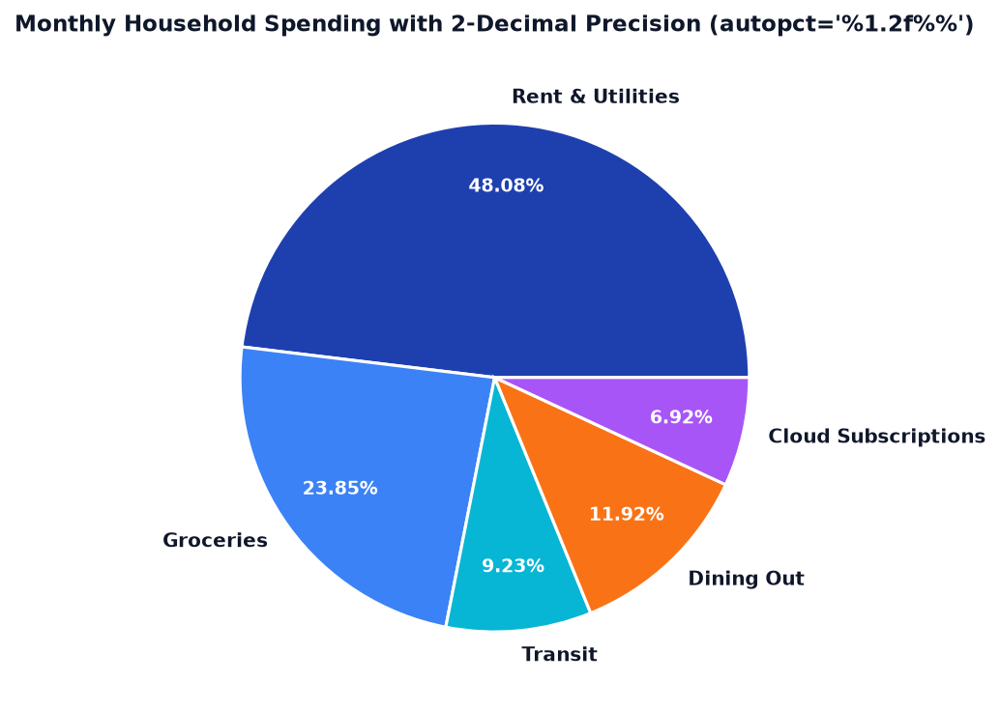
Figure 8.4: Monthly spending with 2-decimal precision (autopct='%1.2f%%'). Rent takes 48.08% of total Rs. 26,000 expenditure.
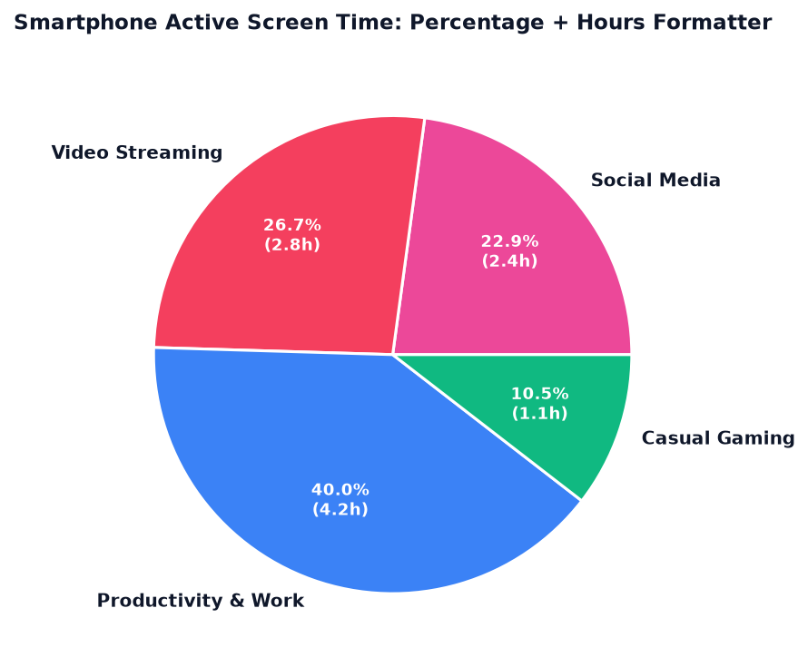
Figure 8.5: Screen time distribution using a custom lambda formatter to display both percentage and exact hours simultaneously.
Default Matplotlib colors aksar dull lagte hain. Professional design ke liye hum custom hex colors aur crisp borders use karte hain:
colors=['#0284c7', '#38bdf8', '#059669', ...]: Readable, contrasting color palette.wedgeprops={'edgecolor': 'white', 'linewidth': 2.0}: Slices ke beech crisp white border deta hai.textprops={'fontsize': 10, 'color': '#0f172a', 'fontweight': 'bold'}: Labels ki legibility improve karta hai.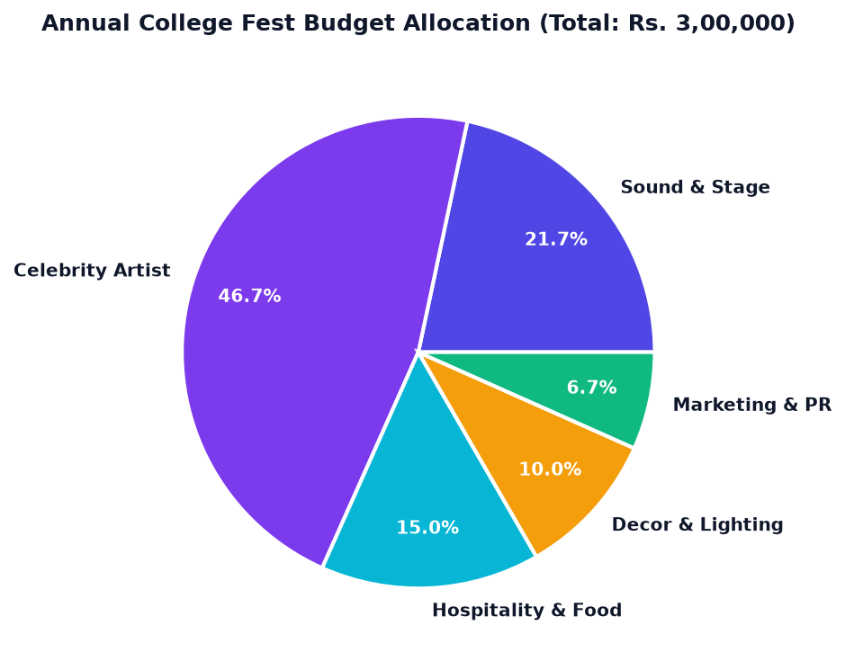
Figure 8.6: College Fest budget with distinct high-contrast colors and white wedge borders. Celebrity Artist is the biggest allocation at 46.7% (Rs. 1.4 Lakhs).
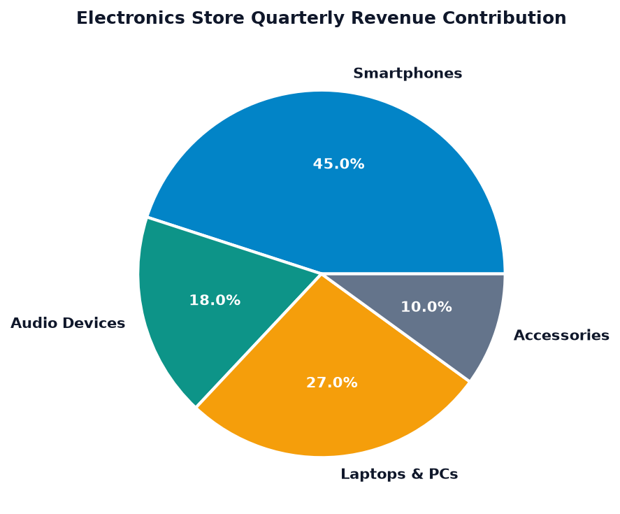
Figure 8.7: Corporate tech theme palette for an electronics store's quarterly revenue contribution.
Jab aap chahte hain ki viewer ka dhyan kisi specific slice (jaise Student Savings ya Highest Selling Product) par turant jaye, toh hum explode parameter use karte hain. Yeh specific slice ko center se thoda bahar ki taraf nikaal deta hai.
explode ek tuple ya list hoti hai jisme har category ke liye radial offset distance (usually 0.05 se 0.15) define ki jaati hai:
# 5 categories: 5th category (Savings) ko 0.15 radius bahar nikalo
explode_savings = (0.0, 0.0, 0.0, 0.0, 0.15)
ax.pie(values, explode=explode_savings, labels=categories, autopct='%1.1f%%')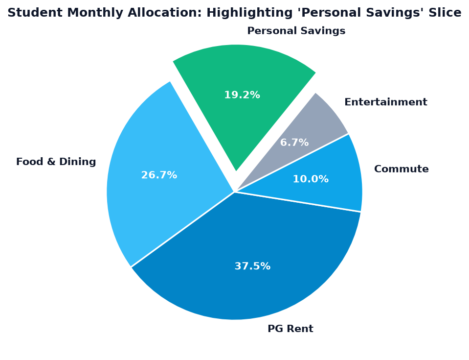
Figure 8.8: The 'Personal Savings' slice (19.2%) is highlighted using explode=0.15 to emphasize financial discipline.
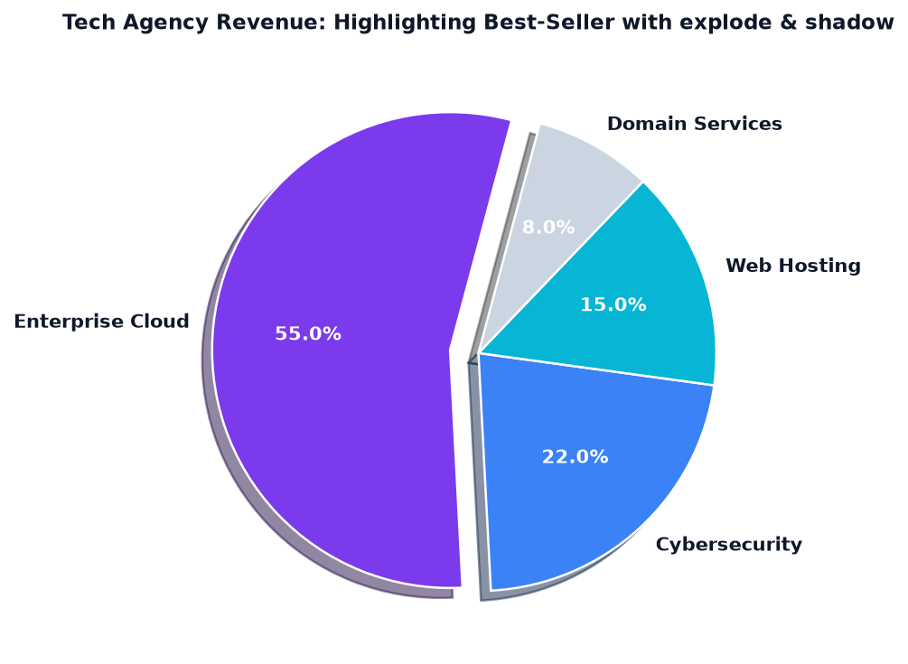
Figure 8.9: B2B tech agency revenue highlighting Enterprise Cloud (55.0%) with explode=0.12 and soft 3D shadow.
By default, Matplotlib pehli slice ko positive X-axis (3 o'clock position) par draw karna shuru karta hai aur counter-clockwise ghumata hai. Aap startangle parameter se ise customize kar sakte hain:
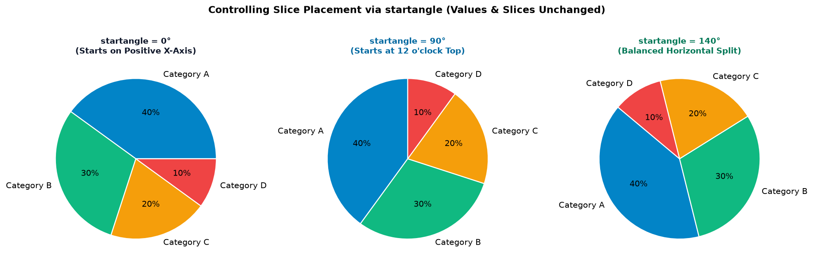
Figure 8.10: Comparing start angles on identical data. Left: 0° (starts at 3 o'clock). Center: 90° (starts at 12 o'clock top). Right: 140° (creates a balanced horizontal split).
Text placement ko control karne ke liye Matplotlib 2 main distance parameters deta hai:
pctdistance (default 0.6): Center se percentage text ka radial distance (0.0 = center, 1.0 = edge).labeldistance (default 1.1): Center se category label text ka radial distance (> 1.0 matlab pie ke bahar).Agar aapke paas 5 ya 6 categories hain aur kuch slices chhote hain, toh direct labels aapas mein collide kar sakte hain. Aise case mein direct labels hatakar ek Outside Legend lagana sabse best practice hoti hai:
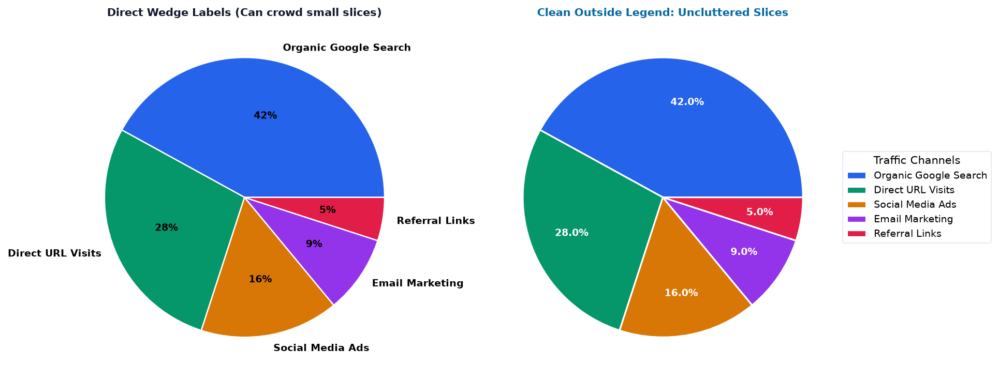
Figure 8.11: Left: Direct labels crowd small slices. Right: Placing categories inside an outside legend (bbox_to_anchor=(1, 0, 0.5, 1)) keeps the chart completely uncluttered.
Donut Chart ek modern pie chart hota hai jiske center mein ek khali hole (ring) hoti hai. Visual design mein donut charts bohot popular hain kyunki unke center hole mein hum summary KPI (jaise Total Budget, Total Revenue, ya Target Metric) likh sakte hain!
Matplotlib mein donut chart banane ka sabse simple aur reliable tareeqa hai wedgeprops={'width': 0.4} pass karna:
# Create Donut Chart: ring width = 0.4
wedges, texts, autotexts = ax.pie(
amounts,
labels=categories,
autopct='%1.1f%%',
pctdistance=0.78,
wedgeprops=dict(width=0.4, edgecolor='white', linewidth=2.0)
)
# Center KPI Annotation
ax.text(0, 0, "Total Budget\nRs. 5,000", ha='center', va='center', fontsize=12, fontweight='bold', color='#0369a1')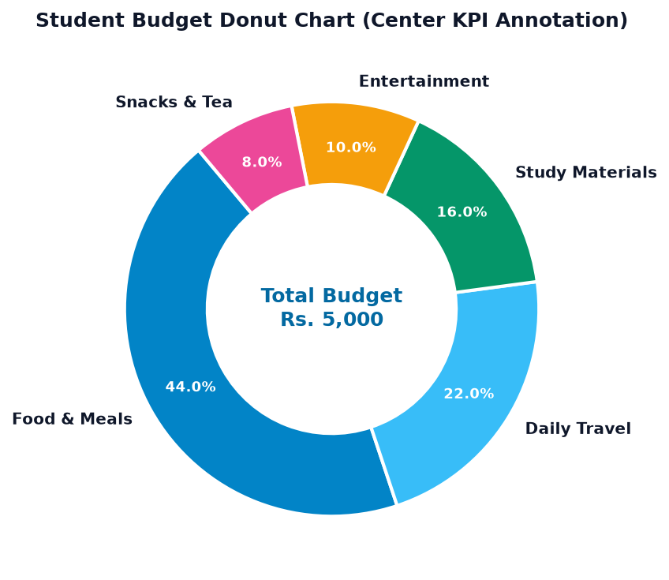
Figure 8.12: Donut chart displaying student budget with center KPI text 'Total Budget Rs. 5,000'.
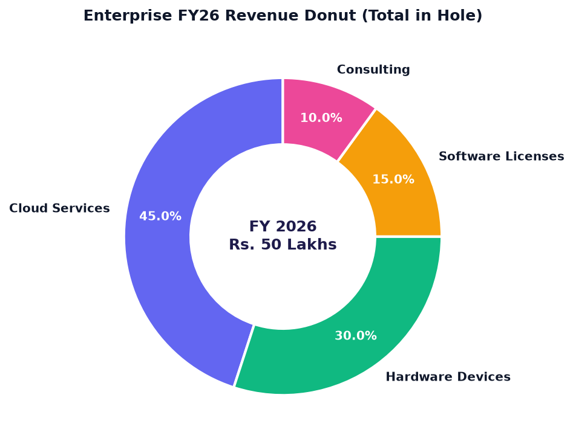
Figure 8.13: Enterprise revenue donut chart with center text 'FY 2026 Rs. 50 Lakhs'.
Agar dataset mein 10 se 15 chhote-chhote items hain (e.g. 1% ya 2% ke tiny apps), toh sabhi ko pie chart par plot karne se chart unreadable ban jata hai. Aise micro-slices ko responsibly ek single 'Other' category mein group karein:
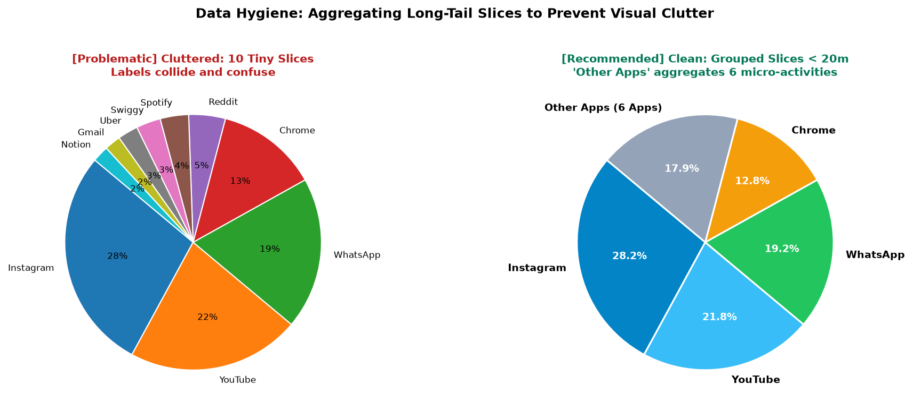
Figure 8.14: Left: 10 raw slices collide and clutter. Right: Slices under 20 mins aggregated cleanly into 'Other Apps (17.9%)'.
Data visualization experts (jaise Edward Tufte) aksar pie charts ko criticize karte hain. Iska reason hai Human Perception: Insaan ki aankhein do alag-alag angles (jaise 22.5° vs 21.0°) ke beech ka farq aasani se judge nahi kar paati, jabki linear length (bar chart) ko instantly aur accurately compare kar leti hai!
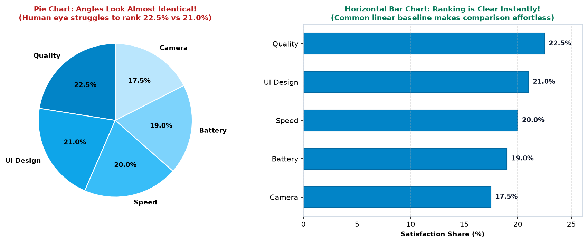
Figure 8.15: The perception test. Left (Pie): Slices are almost indistinguishable (~20%). Right (Bar): The horizontal bar chart instantly reveals the exact hierarchy from Quality (22.5%) down to Camera (17.5%).
Pie chart banane se pehle data validation karna zaroori hota hai taaki silent logical errors na aane payein:
sum(values) == 0 ho, toh percentage calculation mein ZeroDivisionError aayega.def validate_pie_data(values, labels):
if len(values) != len(labels):
raise ValueError(f"Length mismatch: {len(values)} values vs {len(labels)} labels!")
if any(v < 0 for v in values):
raise ValueError("Pie chart data cannot contain negative values!")
total = sum(values)
if total <= 0:
raise ValueError("Sum of values must be greater than zero!")
percentages = [(v / total) * 100 for v in values]
return total, percentages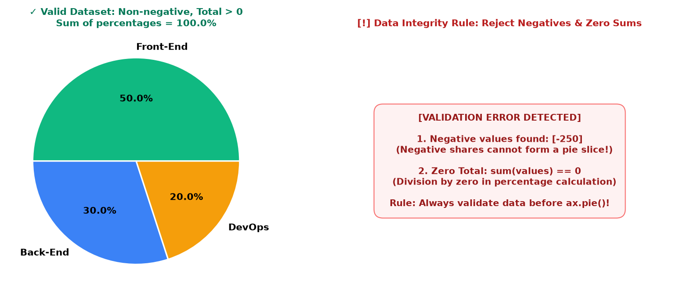
Figure 8.16: Defensive data validation rules: Rejecting negative numbers and zero sums before rendering.
Mistake: 12 alag-alag categories ek hi pie mein dalna.
Fix: Top 4–5 categories rakhein aur baaki ko 'Other' mein group karein.
Mistake: Borders na lagane se similar shades aapas mein merge ho jaate hain.
Fix: Pass wedgeprops={'edgecolor': 'white', 'linewidth': 1.5}.
Mistake: Sabhi slices ko 0.1 explode kar dena.
Fix: Sirf 1 target slice ko explode karein jisse dhyan wahan jaye.
Mistake: Sirf category names likhna bina percentage numbers ke.
Fix: Hamesha autopct='%1.1f%%' use karein.
Mistake: Pie chart ko time-series trend samajhna.
Fix: Time ke sath change dikhane ke liye Line plot ya Area chart use karein.
Mistake: Averages ya conversion rates ka sum karke pie banana.
Fix: Pie chart sirf absolute mutually exclusive parts of a whole par banta hai.
Mistake: Profit/loss data mein negative numbers pie chart ko dena.
Fix: Negative data ke liye horizontal bar chart use karein.
Mistake: Dark slices par black text likhna jo invisible ho jaye.
Fix: Slices ke andar autotext.set_color('white') set karein.
Mistake: Chhote slices ke labels text ek doosre par chadh jana.
Fix: ax.legend() use karke labels ko bahar le jayein.
Mistake: Do related charts ko alag-alag startangle dekar confuse karna.
Fix: Comparisons mein standard 90° ya 140° angle maintain karein.
Mistake: Hardcoded number likhna jo data update hone par galat ho jaye.
Fix: Center text dynamically sum(values) se format karein.
Mistake: 5 categories mein 4 values ka explode tuple pass karna.
Fix: Explode tuple ki length exactly categories list jitni honi chahiye.
Scenario: Ek engineering college student ko monthly Rs. 8,500 ka pocket money budget milta hai. Student dekhna chahta hai ki uski money kahan jaa rahi hai aur savings ka kitna hissa bach raha hai:
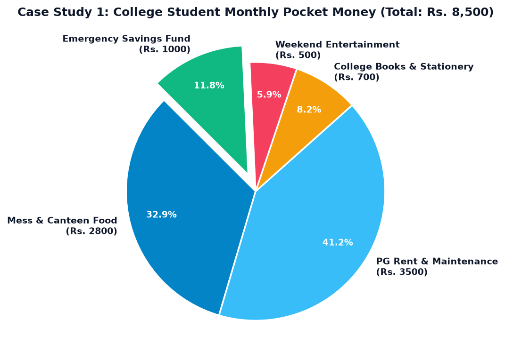
Figure 8.17: Complete College Student Budget Pie Chart with highlighted Savings slice (11.8%).
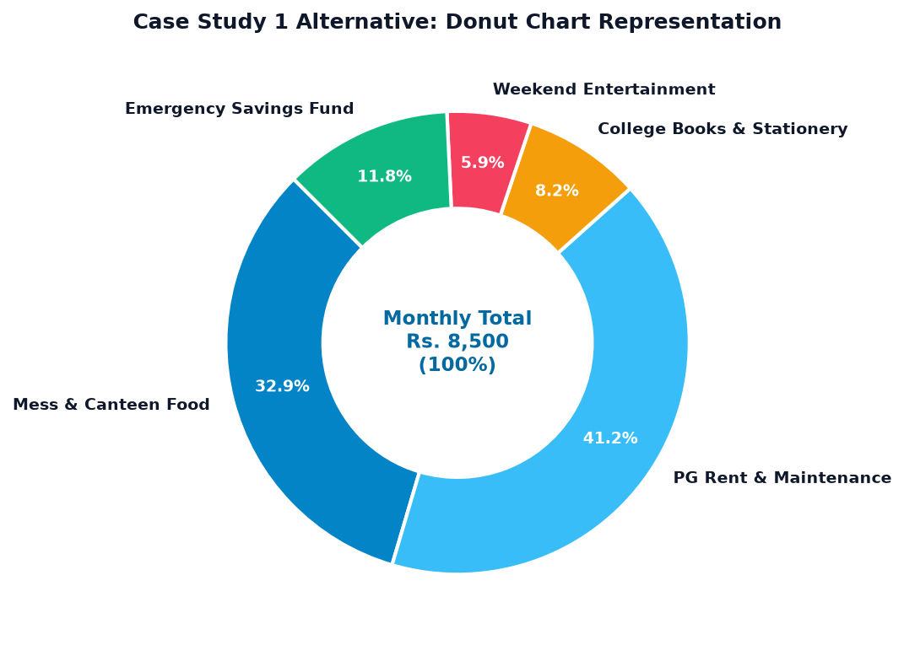
Figure 8.18: Modern Donut Chart alternative displaying total budget 'Rs. 8,500' in the center hole.
Scenario: Ek online retail company ka quarterly revenue Rs. 1 Crore (100 Lakhs) hai across 5 major product verticals:
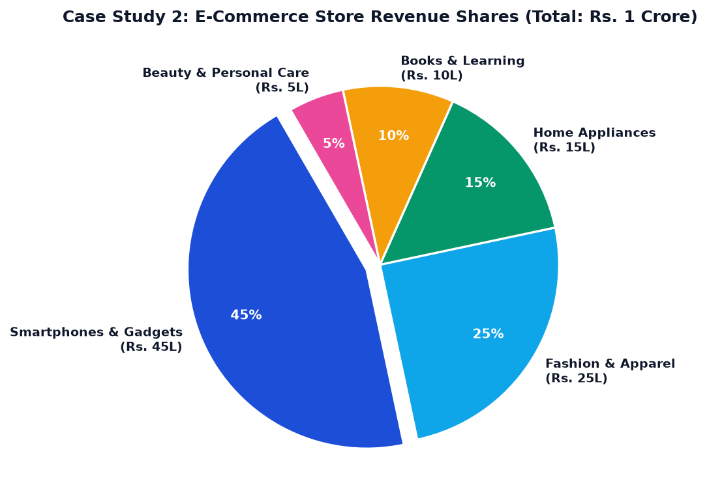
Figure 8.19: E-Commerce quarterly revenue distribution pie chart with Smartphones (45%) exploded.
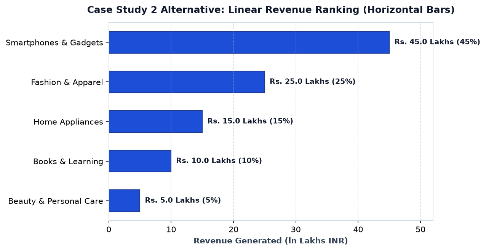
Figure 8.20: Superior linear alternative: Horizontal Bar Chart showing exact revenue amounts and clear ranking hierarchy.
Aapko kab Pie chart use karna chahiye aur kab doosra chart? Yeh concise comparison matrix follow karein:
| Visualization Type | Best Used When... | Avoid When... | Strengths |
|---|---|---|---|
| Pie Chart | Aapko 3–5 categories ka single broad share (% of 100%) dikhana ho. | Categories 6 se zyada hon ya values bohot close hon (e.g. 21% vs 20%). | Intuitive, familiar, instant part-to-whole perception. |
| Donut Chart | Aapko modern UI dashboard mein center KPI number (Total) display karna ho. | Slices bohot chhote hon jisse ring distorted lage. | Center hole provides space for summary metrics without extra labels. |
| Vertical Bar Chart | Categories ke exact counts compare karne hon (e.g. sales by city). | Category names bohot lambe hon (text overlaps). | Zero-baseline makes exact value differences crystal clear. |
| Horizontal Bar Chart | Category names lambe hon aur 10+ items ko rank karna ho. | Part-to-whole ratio convey karna primary goal ho. | Easily readable labels, naturally accommodates long lists. |
| Stacked Bar Chart | Multiple groups ke andar part-to-whole breakdown compare karna ho. | Individual internal segments compare karna priority ho (baselines shift). | Compares grand totals and percentage shares across different groups. |
Scenario: Ek freelance full-stack software engineer ek week mein 40 hours kaam karta hai aur total Rs. 88,000 earn karta hai across 4 task types:
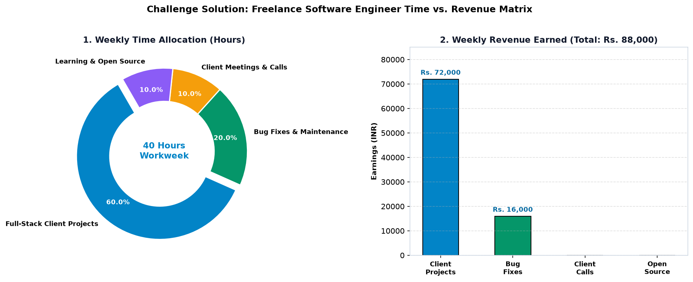
Figure 8.21: Challenge Solution. Panel 1: Donut chart of 40-hour weekly time allocation. Panel 2: Bar chart of revenue earned showing that Client Projects drive 81.8% of cashflow.
| Parameter | Type / Values | Purpose & Best Practice |
|---|---|---|
x |
List / 1D Array | Raw wedge sizes (e.g. [40, 30, 20, 10]). Non-negative values only. |
labels |
List of strings | Category names placed outside the slices. |
autopct |
String or callable | Percentage formatter: '%1.1f%%' (1 decimal) ya custom lambda. |
colors |
List of color codes | Custom hex palette: ['#0284c7', '#38bdf8', '#059669', ...]. |
explode |
Tuple of floats | Radial offset: (0, 0, 0, 0.15) pops out the 4th slice for emphasis. |
startangle |
float (degrees) | Starting angle: 90 starts at 12 o'clock, 140 gives a horizontal split. |
pctdistance |
float (default 0.6) | Radial distance from center for the percentage text. |
wedgeprops |
dict | Slice properties: {'edgecolor': 'white', 'linewidth': 1.5} or {'width': 0.4} for donut. |
shadow |
bool | Adds a soft 3D shadow under the pie chart. |
wedgeprops={'edgecolor': 'white'} slices ko distinguish karta hai.Part-to-whole categorical proportions ke baad hum specialized continuous visual representations seekhenge!
Matplotlib Topic 9: Area, Step & Stem Plots mein aap seekhenge:
ax.fill_between() se cumulative volume aur shaded areas create karna.